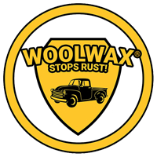

Woolwax
Woolwax is a lanolin-based corrosion inhibitor specifically formulated to protect the undercarriages of automobiles and trucks. Derived from the natural wool grease found on raw sheep wool, lanolin serves as an effective moisture barrier and lubricant.
A single application of Woolwax can effectively protect a vehicle's undercarriage through harsh winter conditions. While the product is highly resistant to wash-off, it is recommended to reapply Woolwax annually due to our region's heavy road salt usage.
Woolwax is available in both Straw (clear) and Black formulations, catering to different customer preferences and vehicle aesthetics.
Key Features:
- Solvent-Free Composition: Unlike many undercoating products that contain up to 70% solvents, making them thin and prone to washing off, Woolwax is entirely solvent-free. This results in a thick, viscous consistency that adheres robustly to surfaces, providing extended protection against wash-off.
- Non-Drying Formula: Woolwax remains soft and pliable over time, allowing it to continuously migrate into hard-to-reach areas, ensuring comprehensive coverage and ongoing protection.
- Enhanced Lanolin Content: With a higher concentration of raw wool grease compared to similar products, Woolwax offers superior resistance to wash-off, thereby extending the duration of undercarriage protection.
Pricing
*All pricing subject to change pending shop determination.
- Woolwax Undercoating - Starting at $100.00/gallon installed